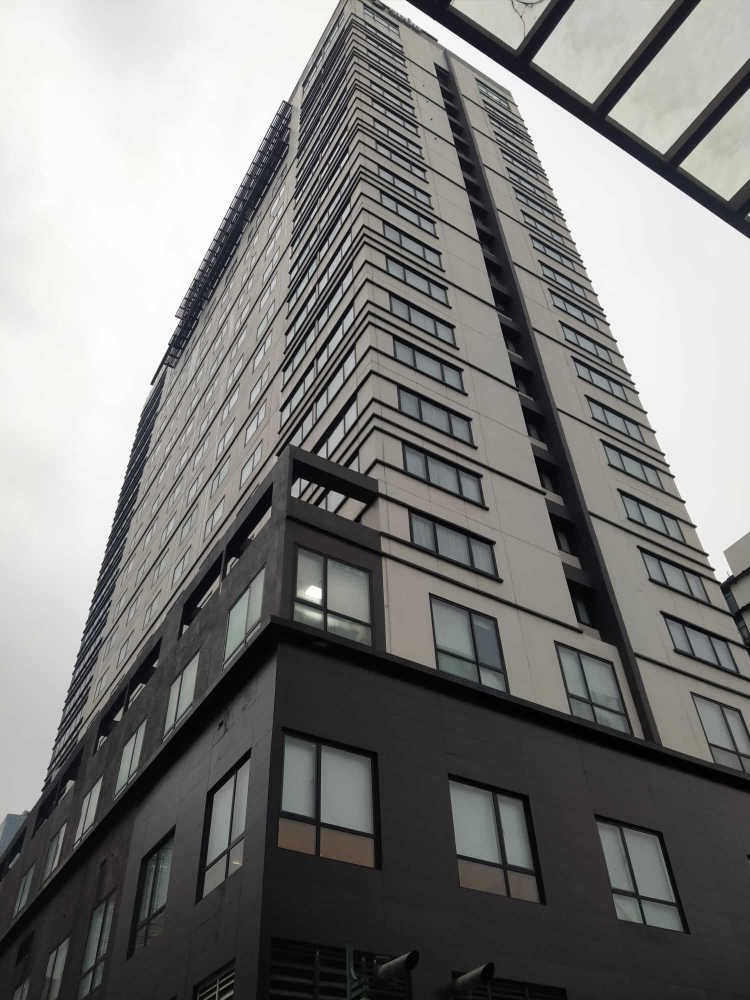
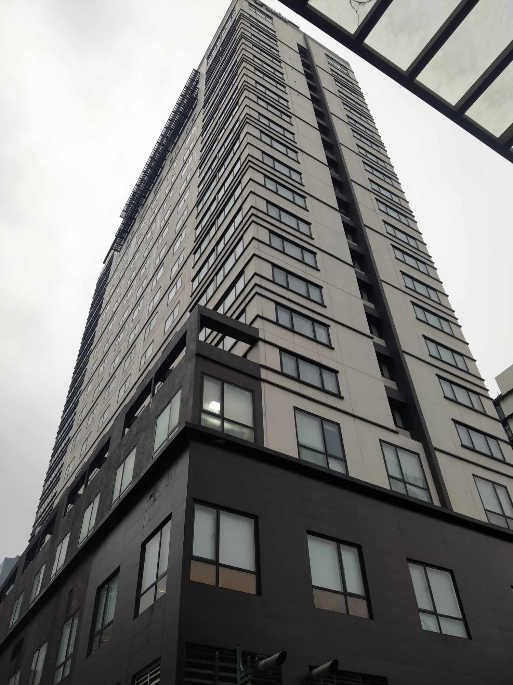
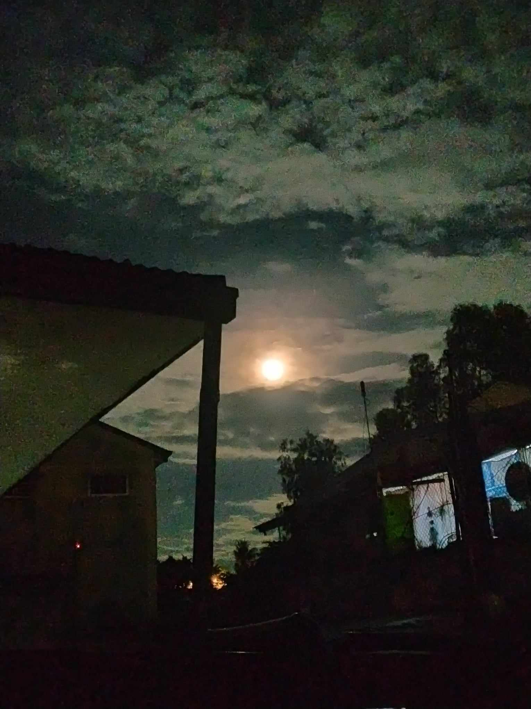
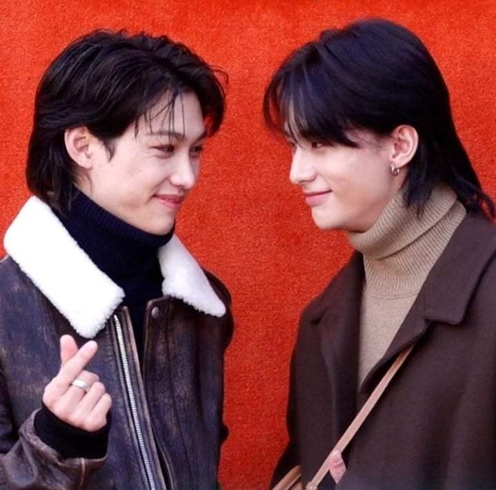
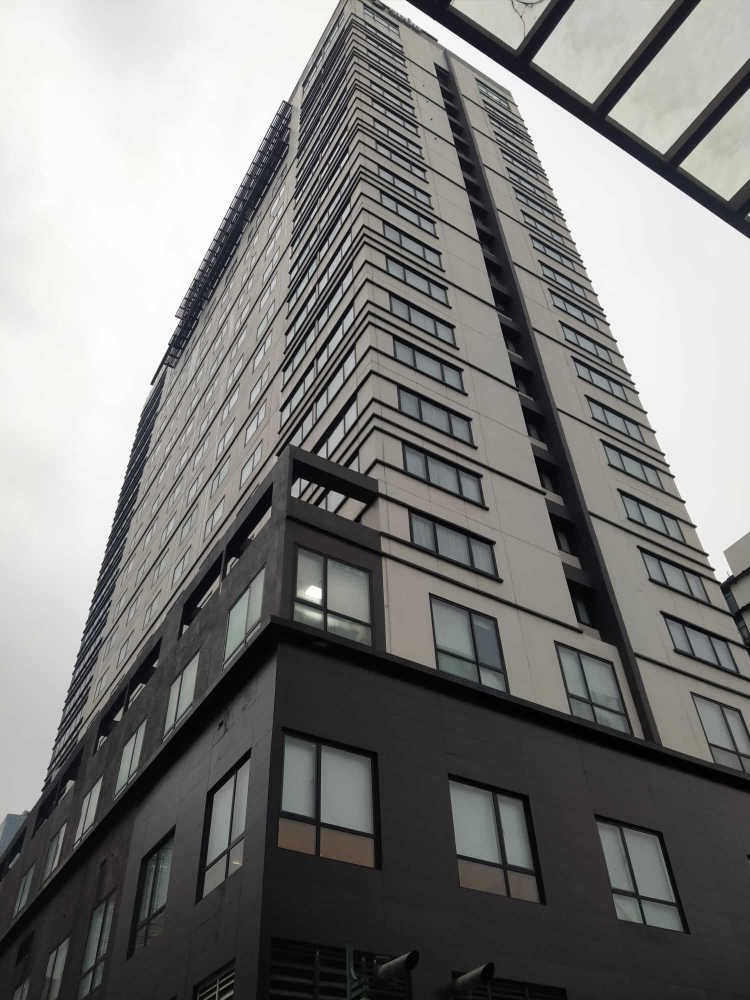

Gallery
 



A third year college student taking up Bachelor of Science in Information Technology at Polytechnic University of the Philippines Taguig Branch.
Online games - Playing games such as Mobile Legends, League of Legends, and Roblox gets rid of my boredom.
Cooking - I cook common Filipino dishes every day.
Watching animes - I watch anime when I still have allotted time.
Reading manhwa, manga & manhua - I love reading these types of illustrations and most importantly, the genre.
Coding - This became my hobby because I cannot just ignore my school life, especially my future.
"Embarking on my web development journey has been incredibly exciting. As a beginner, I've marveled at the wonders of HTML, CSS, and JavaScript, the building blocks of the web. With the help of beginner-friendly tutorials, online courses, and supportive coding communities, I've started creating my first websites from scratch. Understanding the basics has given me a strong foundation, and I'm enthusiastic about delving deeper into the world of web technologies.
"He is doing his job properly individually or in group. I like his determination to learn and to apply his learnings in real life. He's also persevered to take on the different challenges. I want to learn the lessons together with him." - James Nabayra
"He always ready to lend a helping hand to those in need." - Diana Rose Fidel
"I appreciate his assistance, especially on this subject. I'm glad we can count on someone like him." - Karen Alonica Casim
"He is determined to achieve his goals. Admirable indeed." - Kazel Villamarzo
Goal 1: To be a full stack or game developer.
Goal 2: Build my own house.
Goal 3: Travel the world.
Name: Karen Alonica Casim
- Good luck with your aspirations, and I hope you know how to rest.
Name: Diana Rose Fidel
- Do everything you can to achieve your goal.
Name: James Nabayra
- Your goals are too specific and I love it because you know every steps on how to do this properly. Thank you also for guiding us in the right path. You really are an organized person. Let's unite always, Ed!
Name: Kazel Villamarzo
- A Friend is a friend but a best friend is even better
In five years, I hope to be a full-stack or game developer. I want to be like that because I know that in the IT field, a position like that will pay well, and with money like that in my hands, I'll be able to meet the demands of my family while still living the life I want to live.
In the last few weeks, I've realized a lot of things that have made me wonder what my future holds. All of the hard work, failure, missing deadlines, and struggles have hit me hard, but I believe that everything happens for a reason, and those things that I've been through, not just this 3rd year college experience, but since the moment I took this course, aren't going to be easy.
I take comfort in the idea that every loss serves as a prelude to a bigger victory when things get stressful and overwhelming. Late nights and strict deadlines are not just challenges, but also opportunities that have helped me become a more mature and resilient developer.
I see myself as working with like-minded people who are passionate about technology, not just as an individual contributor but as a member of a community. The emotional center of my professional story is formed by the collaboration of developers, the sharing of ideas, and our shared goal for perfection.
As I gaze into the future, I can't help but feel a mixture of excitement and anticipation. The industry beckons with its challenges, and I am ready to embrace them with open arms.The idea of leaving my mark and adding to the rapidly changing field of technology gives me a strong feeling of purpose and resolve.
So, despite the inevitable stress and pressure, I can say with conviction that this journey is not just about a destination, it's about the joy of the ride. The late-night coding sessions, the "Aha!" or eureka moments , and the shared victories with my future colleagues will make the entire experience not just worthwhile but profoundly meaningful.
In summary, I'm chasing a dream rather than merely a career. the desire to work as a developer who not only writes code but also produces and solves issues by hand-crafting solutions. And in five years, with the drive that turns each line of code into a labor of love, I see that ideal not only accomplished but flourishing.
